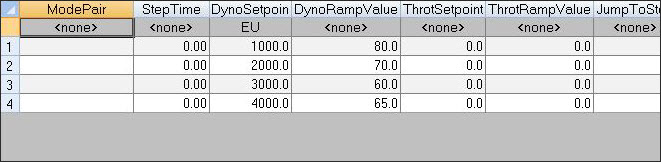
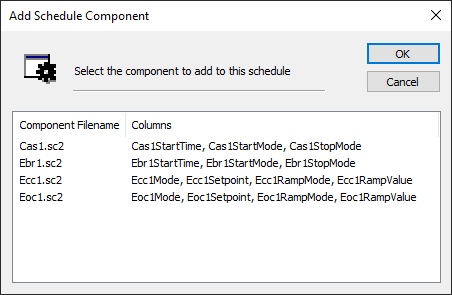
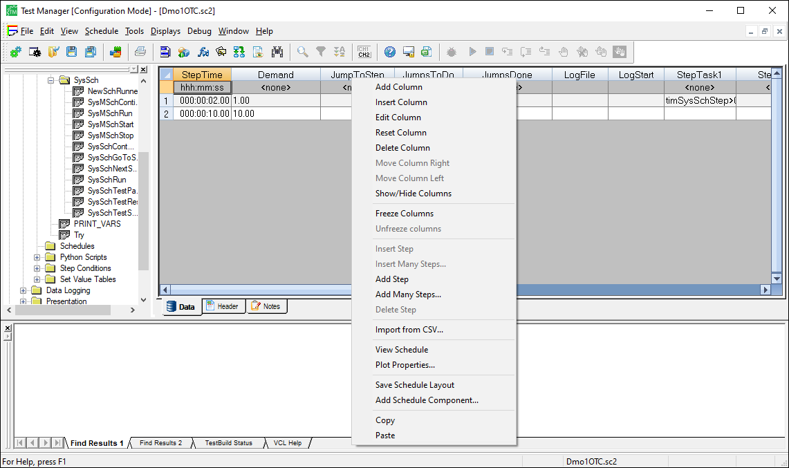
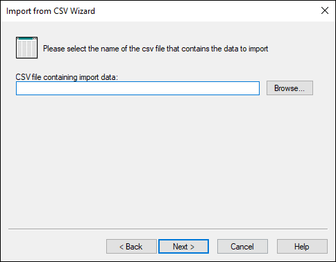
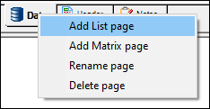
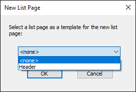
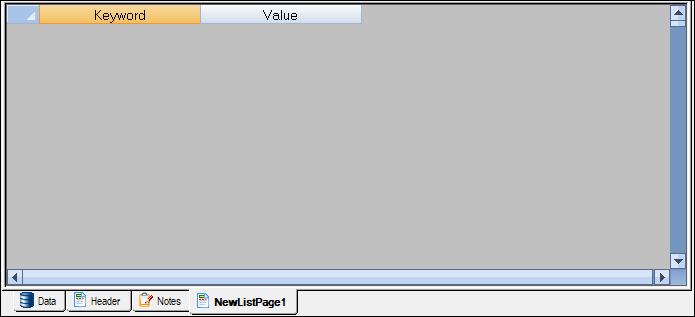

iTest User's Guide
Schedules are standard containers for structuring information in iTest. They are composed of tables, where each row in the schedule is a step in the test. Schedules may contain loops, nested loops, and conditional actions, step tasks, and other special behavior. They are used to store information, such as battery and engine specifications and test sequences. For example, you can set up your schedule so that each step has a mode pair for the engine, a step time, dyno and throttle setpoints, and a number of step tasks. Schedules are generated in Test Manager or by using the Schedule Wizard. This document describes the methods for creating new schedules in your solution and setting up schedule components.
 |
NOTE: | Schedules can also be created in SolutionBuilder. See the SolutionBuilder documentation for more information. |
To create new schedules in Test Manager, do the following:
|
NOTE: | Available options may vary depending on your application. |
The second method for creating a new schedule is used to import rows from an external comma separated variable file (.csv) into an existing schedule template.
To generate a schedule using the Schedule Wizard, do the following:
Your new schedule, which reflects the contents of the .csv file, will be available in the Test Manager tree. For example, importing the following .csv file into the 3rd column of the previously shown Steady State Schedule will result in this schedule with four rows.
SpeedLoad.csv
1000, 80 2000, 70 3000, 60 4000, 65
New Schedule

You can modify functionality of existing schedules by adding pre-built schedule components. Usually these are from modules that have been imported into your solution. To add schedule components to a schedule, right-click within the schedule and select the Add Schedule Component option. A dialog with your solution's available schedule components displays. Select the schedule components you want to add, and those columns will be appended to the end of your current schedule.
Add Schedule Component

|
NOTE: | Schedule components that would duplicate an existing column will not be listed in the Add Schedule Component dialog. |
To duplicate a schedule in Test Manager, right-click the name of the schedule and select Duplicate. A copy of the schedule will be placed immediately below the original with a number "1" added to the end of the name. You can then rename it accordingly.
| WARNING: | Do not attempt to duplicate a schedule through Windows Explorer by copy/paste. This action will break the schedule. |
To edit a schedule in Test Manager, use the Schedule menu or right-click within the schedule to add new rows, columns, steps, import information from a .csv file, etc. For more information, refer to the table below.
The following options are disabled if AutomationPanel or iTest Console is running:
Edit Schedule

Schedule Right-Click Options
| Right-Click Option | Description |
| Add Column | Opens the Add Column dialog. Under the General tab, configure the column's channel, title, units, and default value. Select the checkbox next to Reset each row to to reset the row to a specified value. Select the checkbox next to Read-only in runtime editor to prevent the column values from being modified in iTest Console or other runtime editors. Under the Layout tab, select the column type. Depending on the column type, additional information may be necessary. Additional information can be entered in the field under List information. Select the checkbox next to Mark as required to make the column required in the schedule. Select the checkbox next to Show at runtime to show the column at runtime. The new column is added to the end of the column list. |
| Insert Column | Opens the Insert Column dialog. Under the General tab, configure the column's channel, title, units, and default value. Select the checkbox next to Reset each row to to reset the row to a specified value. Select the checkbox next to Read-only in runtime editor to prevent the column values from being modified in iTest Console or other runtime editors. Under the Layout tab, select the column type. Depending on the column type, additional information may be necessary. Additional information can be entered in the field under List information. Select the checkbox next to Mark as required to make the column required in the schedule. Select the checkbox next to Show at runtime to show the column at runtime. The new column is added to the left of the selected column. If a column is not selected, the new column will be added to the beginning of the schedule. |
| Edit Column | Opens the Edit Column dialog for the selected column. Under the General tab, configure the column's channel, title, units, and default value. Select the checkbox next to Reset each row to to reset the row to a specified value. Select the checkbox next to Read-only in runtime editor to prevent the column values from being modified in iTest Console or other runtime editors. Under the Layout tab, select the column type. Depending on the column type, additional information may be necessary. Additional information can be entered in the field under List information. Select the checkbox next to Mark as required to make the column required in the schedule. Select the checkbox next to Show at runtime to show the column at runtime. |
| Reset Column | Enter the channel value to use to reset the column's values. Once entered, this action cannot be undone. |
| Delete Column | Deletes the selected column. |
| Move Column Right | Moves the column to the right. Only available when the entire column is selected. |
| Move Column Left | Moves the column to the left. Only available when the entire column is selected. |
| Show/Hide Columns | Opens the Show Columns dialog. Check the columns you want to show. |
| Freeze Columns | Locks the columns from the first (leftmost) column in the spreadsheet to the selected column. Frozen columns do not scroll when you scroll horizontally through the document. |
| Unfreeze Columns | Unlocks columns frozen by the Freeze Columns option. |
| Insert Step | Inserts a step at a specific row in a schedule. |
| Insert Many Steps | Inserts a user-defined number of steps at a specific row in a schedule. A dialog will be displayed where you can enter the number of steps you wish to insert. |
| Add Step | Adds a new step under the last step in the schedule. |
| Add Many Steps | Adds a user-defined number of steps under the last step in the schedule. A dialog will be displayed where you can enter the number of steps you wish to add. |
| Delete Step | Deletes the selected step. You will get a prompt asking you to confirm the deletion. |
| Import From CSV | Imports the contents of any comma-separated value file into an existing schedule. The following dialog will be displayed:  |
| View Schedule | Opens the selected schedule in the Schedule View dialog. Set Plot Properties before viewing a schedule. |
| Plot Properties | Opens the Plot Configuration dialog box in which you can plot the values on the schedule. |
| Copy | Copies the selected cell or row. |
| Paste | Places the cell or row that is saved to the clipboard in the selected location. |
You can add, rename, or delete List and Matrix pages using their respective right-click options (as described in the table below). When adding a new list or matrix page, you can select an existing list/matrix page to use as a template.
Right-Click Options

Add New List Page Dialog

Click OK. The new page will be added to the schedule.
New Page

Right-Click Option Descriptions
| Option | Description |
| Add List page | Launches the Add List Page dialog, which allows you to add a new list page. |
| Add Matrix page | Launches the Add Matrix Page dialog, which allows you to add a new matrix page. |
| Rename page | Allows you to rename the name of the page. The name must be unique. |
| Delete page | Deletes the selected page. |